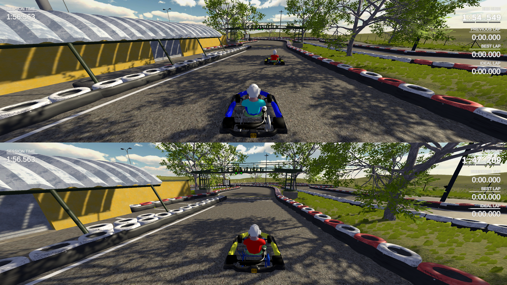

Unity
MasterKart
Local multiplayer karting game. Drive go karts on maps based on the real world with your friends on one computer. Enjoy driving model based on real-life experience on a keyboard or with a controller.
Used Technologies: Unity, Blender, Gimp, Audacity
My responsibilites: Go kart driving physics, sounds and 3D model, track creation
MasterKart was created as a university assignment by a group of 3 people (Me, Zdeněk Doležal and Jakub Sekanina). The goal of the assignment was to try out all of the aspects of developing a game. From coming up with an idea, writing a design document, planning, and prototype creation to the actual development of the resulting game.
The idea to create go kart racing game was selected from multiple ideas of members of our team. We were all interested in the topic and enjoyed kart racing in real life. We could not go karting because of the COVID-19 pandemic, so we decided to make a game that would enable us to have fun related to racing at least in digital form. The goal was to make a semi-realistic game that would be similar to real-life racing and would be fun to play with friends locally on the same computer.
After the design document was created, we had to plan our development so the game would be finished before a deadline set by the university. We divided roles and work between the team members and tried to estimate how long would each step of the development take.
Before we started working on the "final" game, we made a prototype to try out our ideas, see what worked and what had to be changed and hopefully learn from our mistakes. This was really useful later when we did not waste time on features we already knew would not work and it gave us a clearer idea of what we wanted to achieve in the final product.
The version that we deemed as "final" contains go karts with custom driving physics, custom engine sounds and customizable number and color for each player. The go karts achieve similar lap times as their real-world counterparts. Racing can take place on multiple tracks from 3 different environments. The game supports up to four players using keyboards and/or controllers, offering a seamless local multiplayer experience.
The playable version is not publicly available as we feel that it needs some more tracks, tweaks and polish before releasing it.
